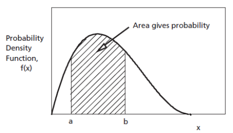

Distribuții ale variabilelor aleatoare
Laboratorul 2, DEDP
1 Obiectiv
Generarea în Matlab a unor eșantioane cu distribuții uniforme și normale, cu diferiți parametri. Calcularea probabilităților teoretice și din vectori de eșantioane. Crearea de histograme. Folosirea funcției erf() pentru funcția de repartiție normală.
2 Considerații teoretice
2.1 Densitate de probabilitate
În acest laborator considerăm variabile aleatoare continue.
O variabilă aleatoare continuă A este descrisă de o funcție densitate de probabilitate (PDF) w_A(x), care arată cât de probabil este ca A să ia valori în jurul lui x. Densitatea de probabilitate mai este numită și distribuția lui A.
Probabilitatea ca A să se afle în intervalul [a,b] este aria de sub PDF pe acel interval, adică integrala PDF de la a la b:
P(a<A\le b)=\int_a^b w_A(x)\,dx,
Probabilitatea se calculează numai pentru intervale de valori. Probabilitatea ca A să fie exact egală cu o anumită valoare este întotdeauna zero.

PDF satisface întotdeauna w_A(x)\ge 0, iar integrala sa este 1, însă valorile sale pot fi mai mari decât 1.
Funcția de repartiție (CDF) este definită ca probabilitatea ca A \le x:
F_A(x)=P(A\le x)
CDF este nedescrescătoare și ia valori între 0 și 1.
CDF poate fi folosită și pentru a calcula probabilități pe intervale:
P(a<A\le b)=F_A(b)-F_A(a).
Cele două funcții sunt legate. PDF este derivata CDF:
w_A(x)=\frac{dF_A(x)}{dx} \qquad \qquad F_A(x)=\int_{-\infty}^{x} w_A(t)\,dt.
Eșantioane aleatoare
O valoare sau un vector cu N valori generate dintr-o anumită distribuție reprezintă un eșantion aleator:
x = [x_1, x_2, \ldots, x_N].
Valorile se schimbă la fiecare rulare, dar comportamentul lor statistic ar trebui să rămână același.
Media și varianța (sau deviația standard) calculate dintr-un anumit vector de eșantioane se numesc media eșantionului și varianța eșantionului (sau deviația standard a eșantionului).
% Media, deviația standard și varianța eșantionului, calculate din date
sample_mean = mean(x_normal)
sample_std = std(x_normal)
sample_var = var(x_normal)Media și varianța eșantionului sunt apropiate, dar nu exact egale cu media și varianța teoretică ale distribuției (sunt „estimări” ale acestor valori teoretice).
2.2 Distribuția uniformă
Definiție și parametri
Distribuția uniformă descrie o variabilă aleatoare care are șanse egale să ia orice valoare dintr-un interval dat [a,b].
Se notează:
A \sim \mathcal{U}[a,b], \qquad \textrm{ unde } a < b.
Funcția sa densitate de probabilitate (PDF) este definită astfel:
f_A(x) = \begin{cases} \dfrac{1}{b-a}, & a \le x \le b, \\ 0, & \text{în rest}. \end{cases}
PDF este constantă pe [a,b].

Media și varianța sa statistică sunt
\mathrm{E}\{A\} = \frac{a+b}{2}, \qquad \sigma_A^2 = \frac{(b-a)^2}{12}.
Generarea eșantioanelor uniforme în Matlab
rand() generează valori uniforme cu 0<A<1. Nu contează dacă valorile extreme 0 și 1 sunt incluse sau nu, deoarece oricum există o infinitate de valori în interval.
A = rand() % o valoare din U[0,1]
A = rand(1, 10) % vector linie cu 10 valori independente din U[0,1]Pentru a obține valori dintr-un interval general [a,b], scalați și deplasați valorile:
B = a + (b-a)A, \qquad A \sim \mathcal{U}[0,1].
a = 5;
b = 7;
N = 1000;
x_uniform = a + (b-a)*rand(1, N);Aici, b-a stabilește lățimea, iar a stabilește limita inferioară.
Probabilități pentru distribuția uniformă
Probabilitățile sunt arii de sub PDF.
Pentru o variabilă uniformă, calcularea probabilităților se reduce la calcularea ariei unui dreptunghi și se poate face ușor.
Exemplu: pentru X \sim \mathcal{U}[2, 10], probabilitatea ca X să fie între 3 și 5 este \frac{2}{8} = 0.25.
2.3 Distribuția normală
Definiție și parametri
Distribuția normală descrie o variabilă aleatoare care ia mai probabil valori apropiate de media sa \mu decât valori îndepărtate, conform unei PDF în formă de clopot („clopotul lui Gauss”).
O variabilă normală se notează:
X \sim \mathcal{N}(\mu,\sigma^2), \qquad \sigma > 0.
Funcția sa densitate de probabilitate este
f_X(x) = \frac{1}{\sigma\sqrt{2\pi}} \exp\left[-\frac{(x-\mu)^2}{2\sigma^2}\right].

Parametrii sunt:
- \mu: media (centrul);
- \sigma^2: varianța;
- \sigma = \sqrt{\sigma^2}: abaterea standard.
Modificarea lui \mu înseamnă deplasarea PDF. Un \sigma mai mare înseamnă o funcție mai lată și mai aplatizată, iar un \sigma mai mic înseamnă una mai îngustă și mai înaltă.
Distribuția normală standard este distribuția normală cu \mu=0 și \sigma=1:
Z \sim \mathcal{N}(\mu=0,\sigma^2=1).
Generarea eșantioanelor normale în Matlab
randn() generează valori din distribuția normală standard \mathcal{N}(\mu=0,\sigma^2=1):
z = randn() % o valoare din N(0,1)
z = randn(1, 10) % 10 valori independente din N(0,1)Pentru valori arbitrare \mu și \sigma, scalați cu \sigma și deplasați cu \mu:
B = \mu + \sigma A, \qquad \text{ unde } A \sim \mathcal{N}(\mu=0,\sigma^2=1).
mu = 5;
sigma = 2;
N = 1000;
x_normal = mu + sigma*randn(1, N);Notă: înmulțiți cu abaterea standard \sigma, nu cu varianța \sigma^2.
Calcularea probabilităților pentru distribuția normală
Integrala din densitatea de probabilitate normală nu poate fi calculată analitic. În schimb, folosim funcția predefinită erf() din Matlab pentru acest scop.
Pentru o variabilă normală A \sim \mathcal{N}(\mu,\sigma^2), probabilitatea ca A să se afle în intervalul [a,b] este:
P(a \le A \le b) = F_A(b) - F_A(a),
unde F_A(x) este funcția de repartiție (CDF) a lui A și se calculează folosind funcția de eroare erf():
F_A(x) = P(A \le x) = \frac{1}{2}\left[1 + \operatorname{erf}\left(\frac{x-\mu}{\sigma\sqrt{2}}\right)\right].
În Matlab:
Exemplu: A \sim \mathcal{N}(\mu=10,\sigma^2=4) și P(8 \le X \le 12):
mu = 10;
sigma = 2;
a = 8;
b = 12;
F_a = 0.5*(1 + erf((a-mu)/(sigma*sqrt(2))));
F_b = 0.5*(1 + erf((b-mu)/(sigma*sqrt(2))));
p_normal_theory = F_b - F_aRezultatul este aproximativ 0.6827. Probabilitatea poate fi estimată și din eșantioane, empiric:
N = 10000;
x_normal = mu + sigma*randn(1, N);
p_normal_estimated = sum(x_normal >= a & x_normal <= b)/N;2.4 Histogramele ca reprezentare vizuală a distribuțiilor
O histogramă este un grafic cu bare care afișează distribuția eșantioanelor, numărând câte eșantioane se află in fiecare interval de valori. În Matlab, se poate folosi funcția histogram():
% Generează 10000 de eșantioane dintr-o distribuție uniformă pe [-4, 10]
x_uniform = -4 + 14*rand(1, 10000);
% Afișează o histogramă cu 30 de clase
histogram(x_uniform, 30)
xlabel('Valoare')
ylabel('Număr de eșantioane')
title('Eșantioane uniforme')
grid onPentru a o compara cu o PDF, trebuie să-i normalizăm aria la 1, folosind opțiunea 'Normalization','pdf':
% Generează 10000 de eșantioane dintr-o distribuție normală cu media 5 și abaterea standard 2
x_normal = 5 + 2*randn(1, 10000);
% Afișează o histogramă normalizată ca PDF, cu 35 de clase
histogram(x_normal, 35, 'Normalization', 'pdf')
xlabel('Valoare')
ylabel('Densitate de probabilitate estimată')
title('Eșantioane normale')
grid onHistogramele sunt o metodă practică de a vizualiza distribuția eșantioanelor (valori, pixeli etc.) pentru a înțelege datele.
2.5 Rezumat: funcții și notații pe care trebuie să le cunoașteți
| Signatură sau notație | Exemplu | Descriere |
|---|---|---|
| X \sim \mathcal{U}[a,b] | X \sim \mathcal{U}[-4,10] | Distribuție uniformă pe [a,b] |
| X \sim \mathcal{N}(\mu,\sigma^2) | X \sim \mathcal{N}(5,2^2) | Distribuție normală: media \mu, varianța \sigma^2 |
rand(m,n) |
rand(1,1000) |
m \times n eșantioane din \mathcal{U}[0,1] |
a + (b-a)*rand(m,n) |
-4 + 14*rand(1,1000) |
Eșantioane din \mathcal{U}[a,b] |
randn(m,n) |
randn(1,1000) |
m \times n eșantioane din \mathcal{N}(0,1) |
mu + sigma*randn(m,n) |
5 + 2*randn(1,1000) |
Eșantioane din \mathcal{N}(\mu,\sigma^2) |
mean(x), std(x), var(x) |
mean(x), std(x), var(x) |
Media, abaterea standard și varianța eșantionului |
histogram(x,n) |
histogram(x,30) |
Histogramă cu n clase; adăugați 'Normalization','pdf' pentru arie unitară |
erf(x) |
erf(1/sqrt(2)) |
Funcția de eroare folosită în CDF normală |
sum(condition)/N |
sum(x >= a & x <= b)/N |
Probabilitate empirică |
3 Exerciții
Scrieți singuri toate comenzile într-un script sau live script. Etichetați figurile și răspundeți la întrebările de interpretare în comentarii.
Eșantioane aleatoare uniforme:
- Generați N=10000 de eșantioane din \mathcal{U}[-4,10].
- Afișați valorile minime și maxime ale vectorului. De ce lipsesc valorile extreme? Și de ce acest lucru nu schimbă distribuția teoretică?
- Comparați
mean()cu (a+b)/2. - Reprezentați grafic primele 100 de valori generate folosind
plot(). - Reprezentați o histogramă normalizată a datelor, cu 30 de intervale. Care este înălțimea sa teoretică?
Efectul parametrilor distribuției uniforme:
- Generați câte 10000 de eșantioane din \mathcal{U}[0,1] și \mathcal{U}[5,7].
- Reprezentați histogramele normalizate, cu același număr de clase, în ferestre separate (
figure). - Descrieți modificările poziției, lățimii și înălțimii PDF.
Eșantioane aleatoare normale:
- Stabiliți
mu1 = 2,sigma1 = sqrt(2)și generați 10000 de eșantioane din \mathcal{N}(\mu=2,\sigma^2=2) înx_normal_1. Al doilea parametru este varianța. - Reprezentați grafic primele 100 de valori din vector.
- Reprezentați histograma tuturor valorilor.
- Calculați media și abaterea standard ale eșantionului cu
mean()șistd()și comparați-le cu 2 și \sqrt{2}. De ce nu sunt exact egale? - Păstrați
sigma1, schimbați \mu la -3 și comparați histogramele. Ce se schimbă? - Păstrați
mu1, schimbați \sigma la 0.5 și comparați din nou.
- Stabiliți
Probabilități pentru o variabilă uniformă:
Fie X \sim \mathcal{U}[-4,10].
- Calculați teoretic P(-1 \le X \le 3).
- Estimați-o din Exercițiul 1 folosind comparații logice și
sum(). - Calculați și estimați P(X>7).
- Repetați pentru N=100, 1000 și 100000. Cum tinde să se modifice eroarea? Trebuie să scadă la fiecare rulare?
Probabilități pentru o variabilă normală folosind
erf():Fie X \sim \mathcal{N}(\mu=2,\sigma^2=2).
- Folosiți
erf()pentru a calcula valorile teoretice ale P(X \le 3), apoi P(0 \le X \le 4) și apoi P(X>5). - Estimați-le pe toate trei din
x_normal_1. - Folosiți funcția
normcdf()pentru a calcula aceleași probabilități (citiți documentația despre utilizarea ei).
- Folosiți
3.1 Exerciții suplimentare
Scrieți
p = myCDF(v, x)pentru a estima P(V \le x):\widehat{F}_V(x) = \frac{\text{numărul elementelor lui }v\text{ care sunt}\le x} {\text{numărul total de elemente ale lui }v}.
Evaluați-o în 100 de puncte folosind o buclă
for. Reprezentați estimările uniforme și normale împreună cu funcțiile lor de repartiție teoretice.Scrieți
p = myPDF(v, x, epsilon)pentru a estima PDF în jurul luixdin eșantioanele aflate în [x-\varepsilon,x+\varepsilon]:\widehat{f}_V(x) = \frac{\text{numărul eșantioanelor din }[x-\varepsilon,x+\varepsilon]} {2\varepsilon\,N}.
Încercați mai multe valori \varepsilon. Explicați compromisul dintre netezime și detalii.
4 Întrebări finale
- Poate o PDF să fie mai mare decât 1? De ce probabilitățile nu pot totuși să depășească 1?
- De ce o estimare din N=1000 de eșantioane poate fi mai slabă decât una din N=100?
- Două seturi de date au aceeași medie și varianță. Trebuie să aibă aceeași distribuție?
- Cum ați putea decide dacă datele măsurate sunt modelate mai bine de o distribuție uniformă sau de una normală?